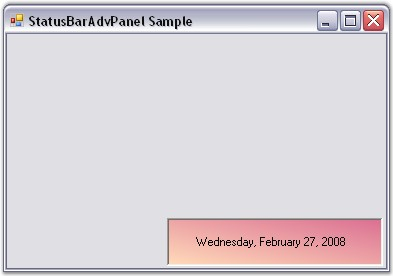

To create a StatusBarAdvPanel programmatically,
· Open a new Visual C# or VB.NET application in Visual Studio .NET.
· Add the Syncfusion assemblies Shared.Base and Tool.Windows to your application.
· Declare the StatusBarAdvPanel control.
|
[C#]
private Syncfusion.Windows.Forms.Tools.StatusBarAdvPanel statusBarAdvPanel1; |
|
[VB.NET]
Private statusBarAdvPanel1 As Syncfusion.Windows.Forms.Tools.StatusBarAdvPanel |
· Initialize the control and add it to your form.
|
[C#]
this.statusBarAdvPanel1 = new Syncfusion.Windows.Forms.Tools.StatusBarAdvPanel(); this.statusBarAdvPanel1.Location = new System.Drawing.Point(48, 128); this.Controls.Add(this.statusBarAdvPanel1); |
|
[VB.NET]
Me.statusBarAdvPanel1 = New Syncfusion.Windows.Forms.Tools.StatusBarAdvPanel() Me.statusBarAdvPanel1.Location = New System.Drawing.Point(48, 128) Me.Controls.Add(Me.statusBarAdvPanel1) |
· Customize the control's look and feel using the properties given below.
|
[C#]
this.statusBarAdvPanel1.BackgroundColor = new Syncfusion.Drawing.BrushInfo(Syncfusion.Drawing.GradientStyle.BackwardDiagonal, System.Drawing.Color.PaleVioletRed, System.Drawing.Color.PeachPuff); this.statusBarAdvPanel1.BorderColor = System.Drawing.Color.Black; this.statusBarAdvPanel1.HAlign = Syncfusion.Windows.Forms.Tools.HorzFlowAlign.Left; this.statusBarAdvPanel1.Location = new System.Drawing.Point(160, 184); this.statusBarAdvPanel1.PanelType = Syncfusion.Windows.Forms.Tools.StatusBarAdvPanelType.LongDate; this.statusBarAdvPanel1.Size = new System.Drawing.Size(216, 48); |
|
[VB.NET]
Me.statusBarAdvPanel1.BackgroundColor = New Syncfusion.Drawing.BrushInfo(Syncfusion.Drawing.GradientStyle.BackwardDiagonal, System.Drawing.Color.PaleVioletRed, System.Drawing.Color.PeachPuff) Me.statusBarAdvPanel1.BorderColor = System.Drawing.Color.Black Me.statusBarAdvPanel1.HAlign = Syncfusion.Windows.Forms.Tools.HorzFlowAlign.Left Me.statusBarAdvPanel1.Location = New System.Drawing.Point(160, 184) Me.statusBarAdvPanel1.PanelType = Syncfusion.Windows.Forms.Tools.StatusBarAdvPanelType.LongDate Me.statusBarAdvPanel1.Size = New System.Drawing.Size(216, 48) |
· Run the application. You will see the StatusBarAdvPanel with the date text displayed at the bottom right of the application.

Figure 1021: StatusBarAdvPanel created Through Code
See Also